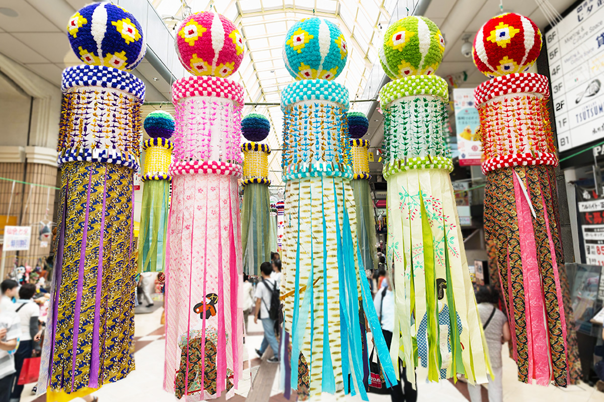
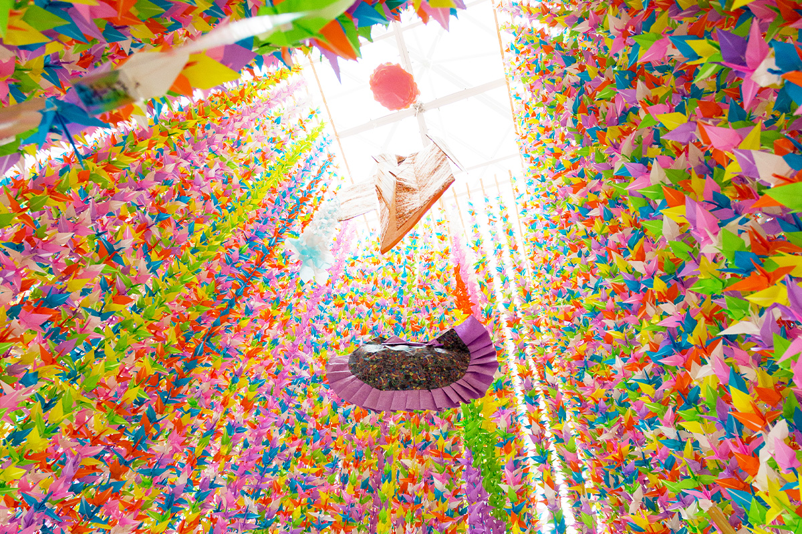
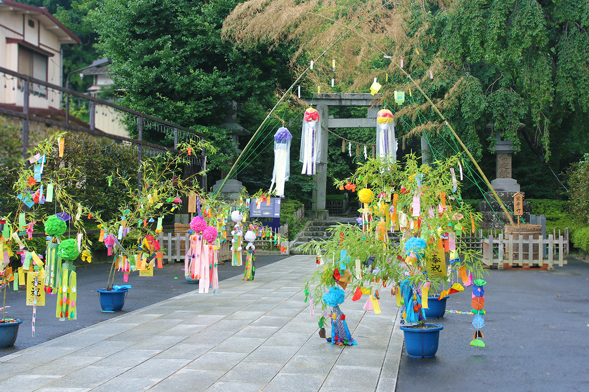
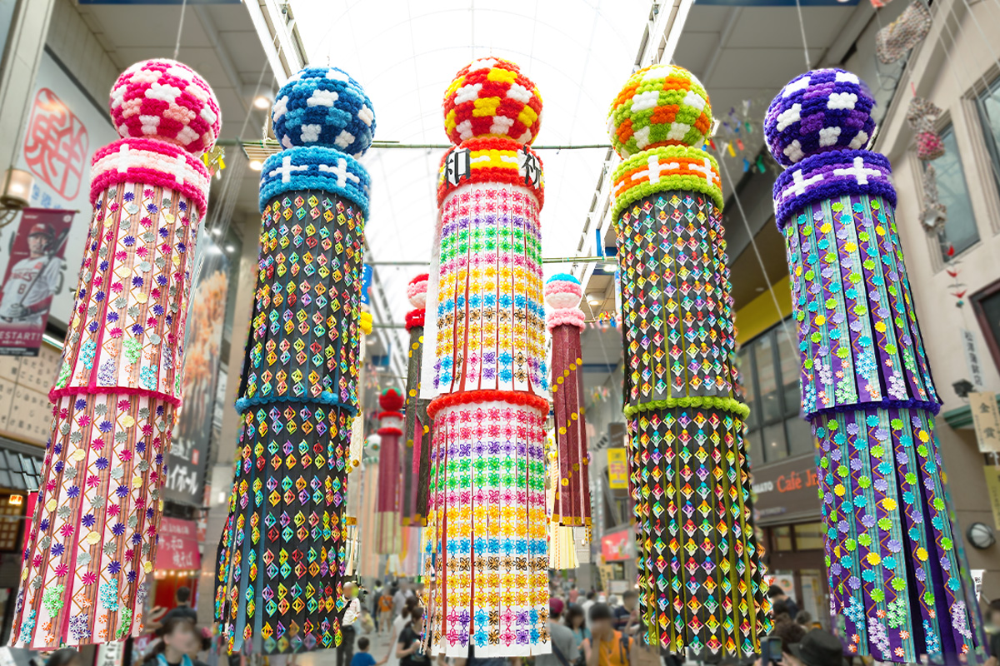
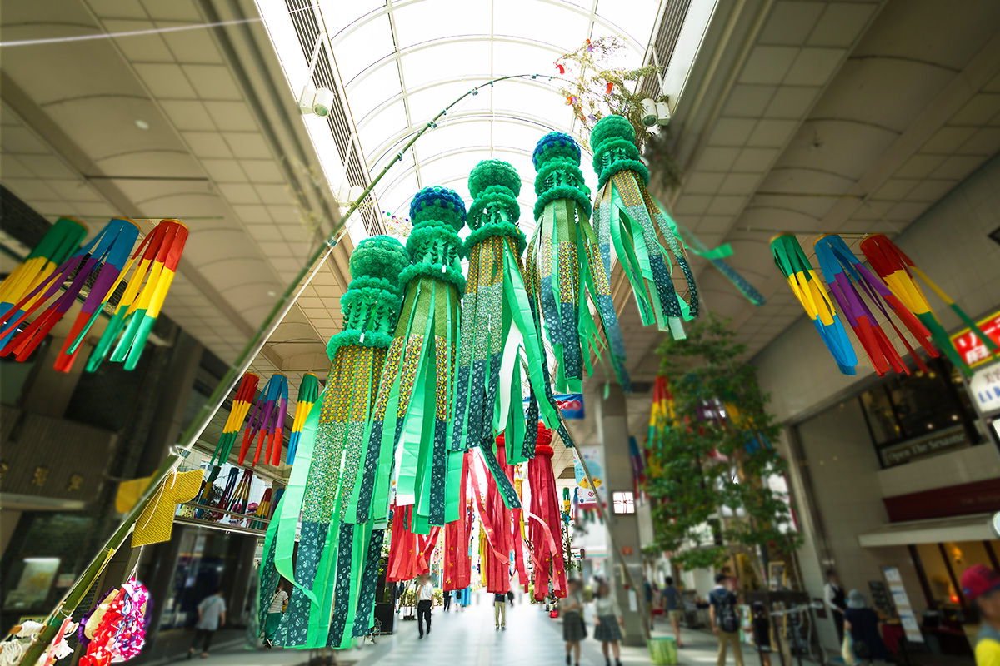
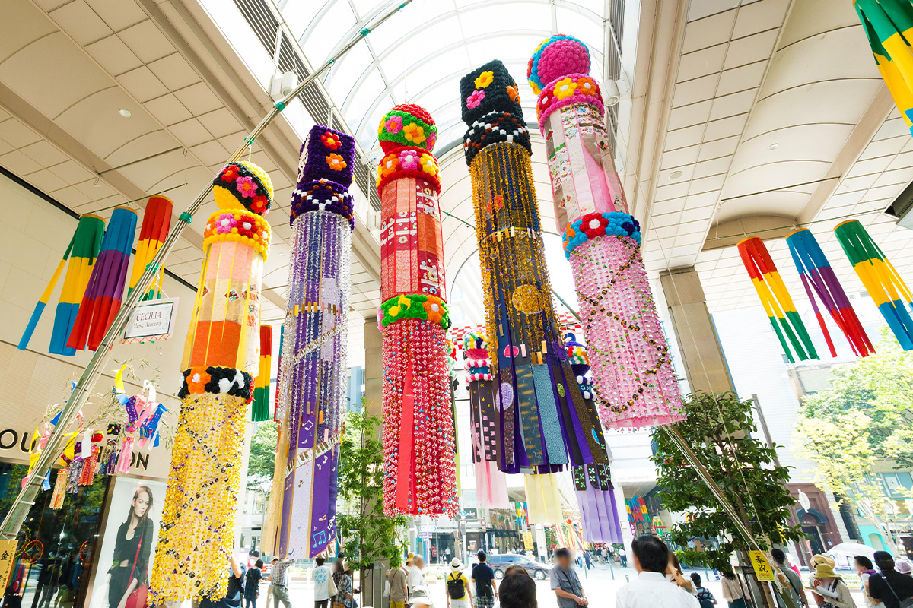
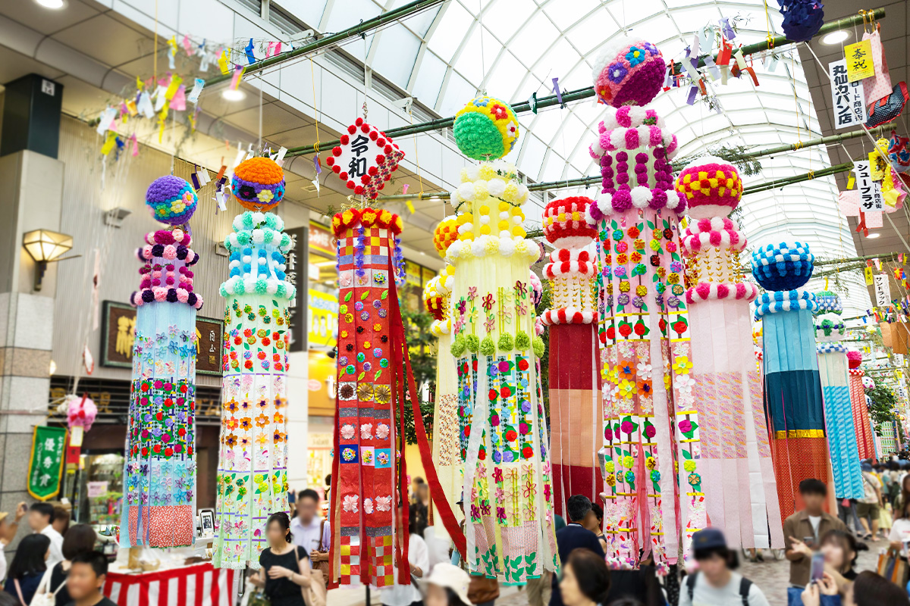
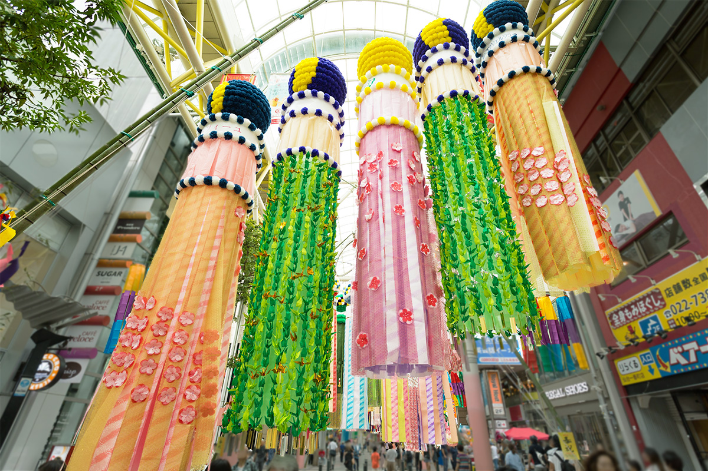
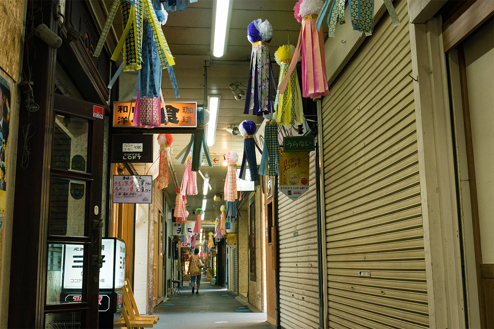
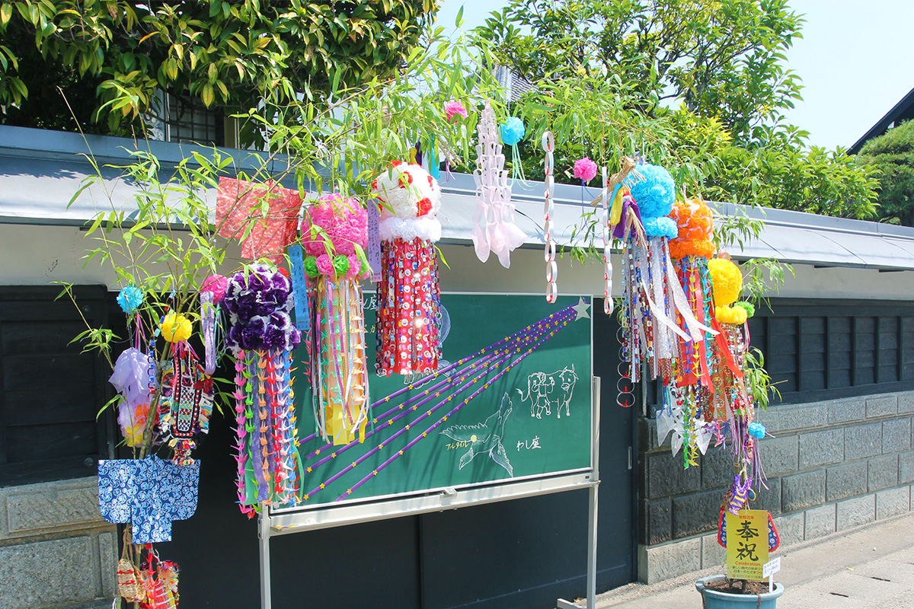

Префектура Мияги · Сендай · праздник
Танабата в Сендае: праздник звёзд, который Датэ Масамунэ подарил женщинам

Праздник Танабата отмечают по всей Японии, но в Сендае он превратился в один из четырёх великих праздников Тохоку. Каждый август над торговыми улицами города повисают бумажные украшения высотой с дом, а начало этой традиции связывают с Датэ Масамунэ.
Праздник
Подарок князя
В японских праздниках виден характер края. Во многих могут участвовать и путешественники: приезжий переживает праздник вместе с местными жителями, и заодно узнаёт историю страны.
Праздник Танабата в Сендае входит в четвёрку великих праздников Тохоку и славится роскошными украшениями. Сам праздник народный и отмечается по всей стране, но размахом в Сендае, как считается, обязан Датэ Масамунэ.
По преданию, Датэ Масамунэ решил устраивать Танабата с размахом ради женщин: праздник должен был вознаградить их за тяжёлый ежедневный труд и подарить им радость.

Истоки
Ткачиха, Пастух и девушки у воды
Корни Танабата уходят к китайской легенде о Ткачихе и Пастухе. Ткачиха была искусной мастерицей, и в Китае в её честь молились об успехах в ткачестве и шитье. Этот обряд, «кикодэн», пришёл в Японию и стал основой Танабата.
В самой Японии в это же время года существовал свой обычай. Девушки уединялись в хижинах у воды, вдали от деревень, и ткали полотно в дар духам предков. Такую девушку называли «танабата-цумэ», и от этого слова произошло само название праздника. Предков просили уберечь посевы от летней засухи, а людей от летних болезней.
Японский Танабата, как считается, вырос из соединения этого обычая с китайским «кикодэн». Сначала в этот день просили о мастерстве в ткачестве, но со временем смысл расширился: дети стали просить об успехах в письме и учёбе. А поскольку Ткачиха и Пастух были любящей парой, позже о Танабата начали просить и о счастье в любви.
Выбор Датэ Масамунэ понятен: ткачество тогда было женской работой, а Танабата с ним тесно связан, поэтому праздник и стал днём, когда благодарили женщин.

История
Как праздник возвращался
После реставрации Мэйдзи праздник на время пришёл в упадок. В 1927 году торговцы Сендая по собственному почину снова вывесили пышные украшения. Горожане с радостью подхватили идею, и Танабата в Сендае вернул себе прежний блеск.
В годы Второй мировой войны, в 1943 и 1944 годах, праздник почти угас. Но уже в 1946 году, на следующий год после её окончания, на пепелищах снова поставили бамбук с украшениями, и это вдохнуло в жителей Сендая силы не сдаваться перед бедой.
Украшения
Шары, ленты и секреты торговых улиц
В старину на пятицветных полосках бумаги «танзаку» писали древние стихи о Танабата, привязывали их вместе с бумажными фигурками к бамбуку, а после праздника пускали по реке. В реку, правда, отправляли только тонкие ветки с украшениями и полосками, а толстые стебли потом служили шестами для сушки белья.

Главная гордость сендайского праздника это сверкающие «фукинагаси», ленты-украшения высотой от 5 до 10 метров. Наверху у них висит шар «кусудама». Раньше его делали из бамбукового решета, украшенного бумажными цветами. Около 1946 года, сразу после войны, один сендайский торговец подсмотрел идею у георгинов, цветших у него в саду: он сделал лёгкий шарообразный каркас из бамбука и обклеил его бумагой. Шар получился таким красивым, что его стали повторять многие, и с тех пор он стал символом праздника.
Украшения каждый год делают заново и готовят за несколько месяцев. Некоторые стоят от нескольких сотен тысяч до нескольких миллионов иен (по данным 2022 года). «Фукинагаси» делают наборами по пять штук. Каждая торговая улица придумывает своё и держит детали в секрете до самого дня праздника.


«Фукинагаси» входит в «семь украшений» Танабата вместе с полосками для желаний «танзаку», бумажным кимоно, журавликами, кошельком, рыболовной сетью и корзинкой. Все они сделаны из бумаги.
Во время праздника проходит и конкурс. Комитет праздника оценивает украшения целых торговых улиц и вручает «награду коллективу», а торговые улицы сами выбирают лучшие украшения отдельных магазинов. Украшения вывешивают утром 6 августа, жюри сразу их осматривает, и уже днём 6 августа объявляют победителей.
Три дня
Миллион гостей под бумажными лентами
Праздник Танабата в Сендае обычно проходит с 6 по 8 августа. В эти три дня город охватывает радостное волнение: люди пишут желания на полосках бумаги и привязывают их к украшениям. Пёстрые ленты радуют глаз, а их шелест в жару звучит прохладно. Сендай называют воротами в Тохоку, и за три дня сюда приходит, по оценкам, около миллиона человек.

В 2026 году праздник прошёл с 6 по 8 августа, как обычно.

Больше всего людей на центральных улицах Тюо-дори, Хигаси-Итибантё и Экимаэ-дори у вокзала. Но не менее приятно пройтись и по окрестным торговым кварталам, где украшения выглядят по-старинному.


Праздник Танабата в Сендае
- Даты
- ежегодно 6–8 августа
- Адрес
- префектура Мияги, Сендай, торговые улицы в центре города и окрестные торговые кварталы
- Телефон
- +81 22-265-8185